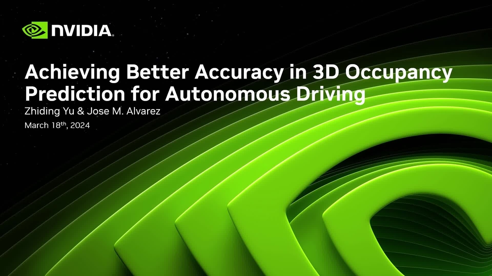

本セッションは、NVIDIA GTC 2024（サンノゼ）で発表された自動運転向け 3D Occupancy予測の精度向上 をテーマとした講演である（セッションID: S62446）。Occupancy予測は、3D空間の各ボクセルが占有されているかどうかを予測するタスクであり、近年の自動運転知覚の重要なトレンドとなっている。
3D Occupancy予測は、車両周囲の3次元空間をボクセルグリッドに分割し、各セルが物体で占有されているか、また何のカテゴリかを推定するタスクである。従来の3Dオブジェクト検出がバウンディングボックスで物体を近似するのに対し、Occupancy予測は空間をより細かく表現できるため、任意形状の障害物（工事資材、倒木など）や道路構造を正確に捉えるのに有利である。
Occupancy予測は次のような理由から自動運転システムにとって重要である。
本セッションではNVIDIAが取り組む3D Occupancy予測の精度改善手法が紹介された。自動運転向けのOccupancy予測では、センサーデータから高品質な3D表現を生成するための以下のような技術的課題が議論されている。
NVIDIAはOccupancy予測を含む自動運転知覚パイプラインの開発・訓練・推論に向けて、DriveシリーズのSoCおよびGPUプラットフォームとの最適化を進めている。高精度なOccupancy予測をオンボードのリアルタイム推論として実現するためのモデル最適化技術もGTCセッションの議論に含まれていた。
3D Occupancy予測はここ数年で急速に注目を集めた研究テーマである。Tesla、NVIDIAをはじめ多くの自動運転企業がOccupancyを知覚スタックの中核に位置付けている。nuScenesなどの公開ベンチマークにもOccupancyタスクが追加されており、学術・産業の両面で評価・比較が活性化している。
Occupancy予測はしばしばNeRF（Neural Radiance Fields）やGaussian Splattingなどの3D表現技術と関連づけて議論される。また、ワールドモデルやエンドツーエンドの自動運転アーキテクチャにおいても、Occupancy表現が中間表現として採用されるケースが増えている。NVIDIAのGTCセッションはこうしたトレンドの最前線を把握する機会として価値がある。
自動運転の知覚スタックにおけるOccupancy予測の技術動向をNVIDIAの視点から把握したい研究者・エンジニアに向けたセッションである。GTC 2024は2024年3月にサンノゼで開催され、自動運転・ロボティクス関連のセッションが多数行われた。本セッションはNVIDIA On-Demandで視聴可能（要登録）である。